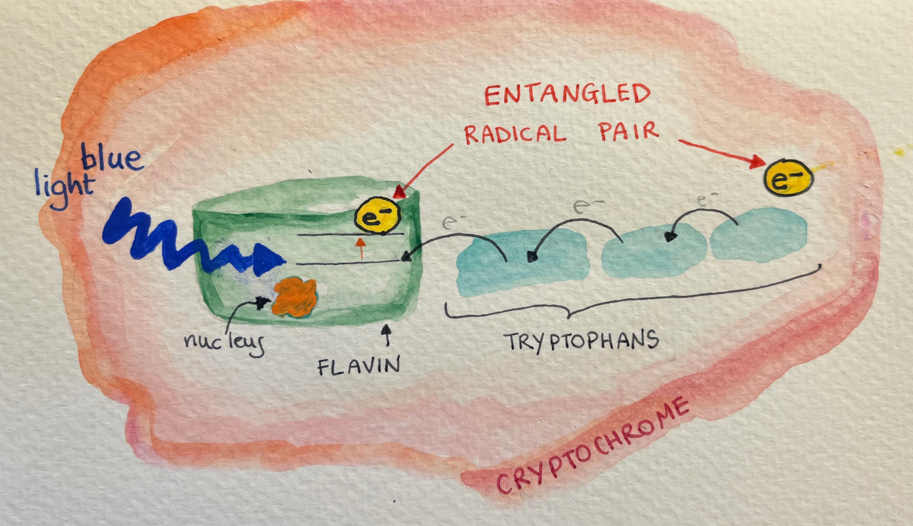
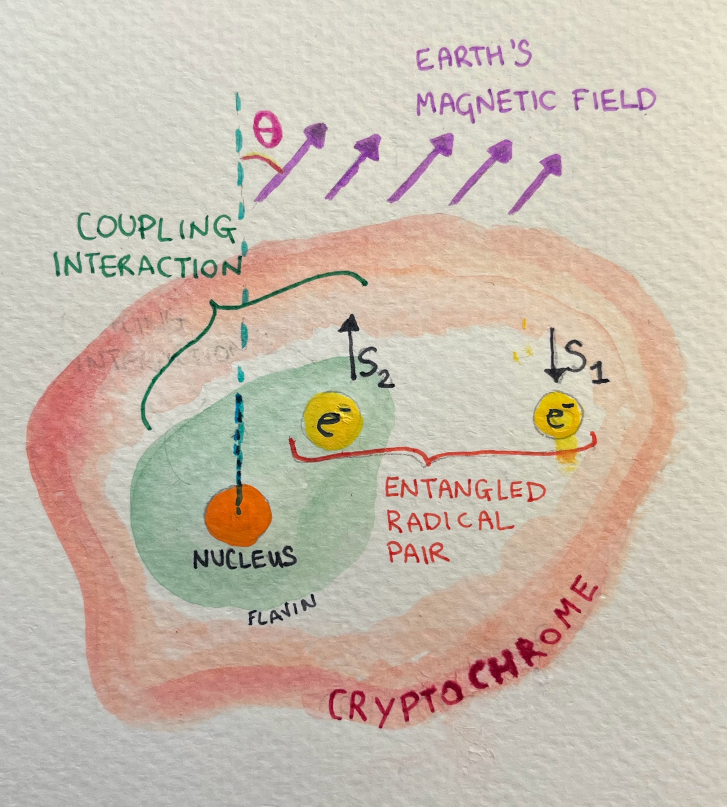
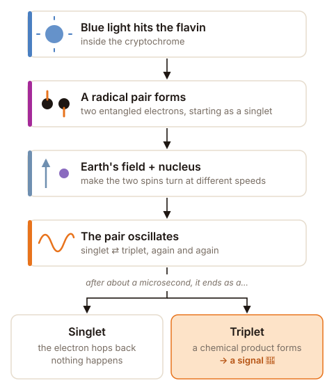
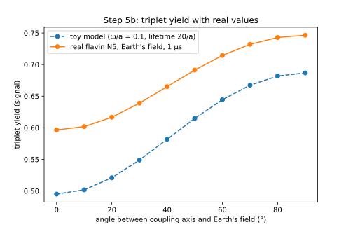
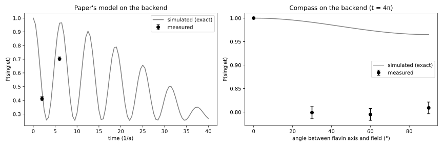

Abstract
Entanglement.
The first thing that comes to mind are my two stray cats, play fighting and ending up in one messy fluffy ball, only to later go different ways, still loving each other - but from a very respectful distance. Whenever I come across the word entanglement in the realm of quantum computing, it usually makes me think of something created in a lab, in an artificial and controlled environment, or a mathematical entity only.
But have you ever wondered how entanglement happens in nature, out there in the wild? Turns out that it could be happening right now inside a monarch butterfly, an incredible insect that migrates thousands of kilometres every year. Monarchs are thought to sense the Earth's magnetic field through a radical pair: two entangled electrons, created by blue light in a protein called cryptochrome. To me, it is one of the most beautiful real-life examples of entanglement.
I modeled this radical pair on three qubits, reproduced the result of Aiello et al. (2026), and asked what turns it into a compass. The answer is the molecule's internal structure, and depends mostly on the nucleus pulling inside the cryptochrome and its alignment with Earth's magnetic field. With real flavin values, the signal is about 25% stronger when the field crosses the flavin’s axis than when it lies along it, and the trend survives on IonQ Forte 1’s noise model.
I loved exploring this project as it sits at the intersection of physics, chemistry, biology and art. I hope the visualizations and simulations I created will also help you remember how entanglement can be created in nature, and hopefully spark an interest in finding better ways to teach science via art.
And next time a monarch flies past you, maybe you’ll remember that there might be a little bit of quantum physics inside her. 🦋
1. Introduction
She is a symbol of summer, flowers and ephemeralness: meet the monarch butterfly!
Every year, monarch butterflies fly thousands of kilometres across North America. Starting from the mountain forests of Michoacán in central Mexico in early spring, over a few months and three to four generations, they make their way all the way up to southern Canada.
Then, at the end of summer, a super generation migrates all the way back to the same mountain forests in central Mexico.
But how does the butterfly know in which direction she is supposed to fly?
While the exact mechanics of how butterflies orient themselves during migration are still unknown, in this project we explore the quantum compass that is thought to help guide monarch butterflies on their incredible migratory journey. Special proteins called cryptochromes, found in the eyes and antennae of monarchs, are very sensitive to blue light. Absorbing blue light creates a pair of entangled electrons, called a radical pair. It is thought that the interaction of the radical pair, the coupling to a nucleus and the Earth's magnetic field influence how the butterfly orients herself, effectively creating a quantum compass.
2. The Radical Pair
Cryptochromes are proteins that are sensitive to light, and they sit in the butterfly's eyes and antennae. When blue light hits the flavin molecule inside the cryptochrome, an electron gets excited and jumps up a level. This leaves the electron unpaired, and an empty seat in the orbital it used to occupy.
The next-door neighbours, a chain of amino acids called tryptophans, now want to fill that empty seat. A chain reaction takes place, with each electron filling its neighbour's empty slot. However, at the far end of the chain, we are also left with an unpaired electron.
These two unpaired electrons are what form the radical pair!

These two unpaired electrons are entangled, and they start off in a singlet state, meaning that their spins point in opposite directions, but neither one has a definite direction on its own. Spin is a property of quantum particles like electrons: it makes them behave like tiny magnets that can point up or down. In the singlet, the pair is in a superposition of "up-down" and "down-up", and their total spin is zero.
And this is where the fun things happen. The pair feels the Earth's magnetic field, and the flavin electron also feels the magnetic pull of its nucleus.

This unbalanced influence makes the two spins turn at different speeds, making the pair oscillate between the singlet and a triplet state.

The radical pair of electrons is unstable and only lives for about a microsecond. Since its state is constantly oscillating between a singlet and a triplet state, the final state is probabilistic.
- If it ends as a singlet, the extra electron on the flavin can jump back to the tryptophan and fill its empty seat, effectively undoing the chain reaction.
- If it ends as a triplet instead, it forms a chemical product, which is thought to affect how the butterfly perceives the world.

Here is a visual to summarize how a radical pair is created, how it evolves over time and how it influences signals in monarchs.

3. What Might The Butterfly Sense?
We previously learned that the radical pair created by the blue light, continuously oscillates between singlet and triplet spin states, up until it interacts with the environment and the entanglement ends.
If the state ends up in a singlet it's back to where it started, and no real change occurred. However, if the radical pair ends up in a triplet, a chemical product is produced. This chemical product is exactly what induces a signal in the butterfly. We should be careful not to mistake this signal as a direction in where to go, as there is currently no evidence of how the butterfly actually perceives the signal.
We will see later that the probability of ending in a singlet or triplet is actually affected by how uniformly the flavin electron feels the pull from its nucleus. You can imagine a tug-of-war between the earth's magnetic field and the coupling field, changing how much of the pair returns to the singlet.
The simulation below assumes that the coupling field is aligned with the direction of the butterfly, and it shows an artist's impression of how strongly the butterfly might perceive the signal as she rotates around her axis.
Change her orientation. The signal is weakest facing north or south, along the field line, and strongest facing east or west, across it. Opposite headings always give the same signal.
ATTENTION!
The tint is an artistic interpretation of signal strength,
not a direction to fly towards. Monarchs likely
sense the signal through their antennae, but how it is perceived
is unknown. We also assume that the flavin's coupling axis (dashed
line) points along the butterfly's body, however it is unknown how
they are oriented in monarch tissue.
The signal tells her how she is turned relative to the field line, not where to go. With a flat field, facing north or south gives exactly the same signal. Monarchs are thought to use an inclination compass, which reads how steeply the field lines dip into the ground, together with their sun compass, to choose their direction (Guerra et al., 2014).
4. Problem Statement
In this project, we use the three-spin model of Aiello et al. (2026) as a toy model: two electrons and one nucleus. In the paper, the nucleus pulls on the flavin electron via isotropic coupling (same in all directions). In real flavins, the nucleus pulls much more strongly along one axis, perpendicular to the flavin ring (an anisotropic coupling).
We assume there is only one nucleus, no decoherence, no interaction between the electrons. It is also unknown how cryptochromes are oriented in the monarch's eyes and antennae, and whether monarchs use this mechanism at all.
We also expand the model to include anisotropic nuclear coupling, and observe its effects on the triplet yield.
5. The Math and Circuits
5.1 The Hamiltonian
We model the three spins with three qubits: qubit 0 is electron 1 (tryptophan), qubit 1 is electron 2 (flavin), qubit 2 is the nucleus. Spin operators are half Paulis, \(\hat S = \sigma/2\). The pair starts in the singlet, with the nucleus 50/50 up or down:
The paper's Hamiltonian (Aiello et al., eq 1) has a Zeeman term for the field and a hyperfine term between electron 2 and the nucleus, with an isotropic tensor \(\mathbf{A} = a\,\mathbb{1}\):
In this project the field is tilted by an angle \(\theta\) away from the flavin axis \(z\) (paper eq SI 2), and the coupling is axial, \(\mathbf{A} = \mathrm{diag}(0, 0, a)\):
We follow the singlet over time, averaging over the two nuclear states \(m\):
Each pair lives for a random time with decay rate \(k\). The triplet yield, the share of pairs that can signal, is:
| Parameter | Value | Meaning |
|---|---|---|
| \(a\) | 1 | hyperfine strength; time is in units of \(1/a\) |
| \(\omega/a\) | 0.1 | Larmor frequency of the field (toy value; Earth ≈ 0.03) |
| \(k\) | 0.05 | decay rate, pair lifetime \(20/a\) |
| \(\theta\) | 0° to 90° | angle between the flavin axis and the field |
5.2 Building the Circuit
Each spin becomes one qubit: \(|0\rangle\) is spin up and \(|1\rangle\) is spin down. The circuit then does four things:
- Create the radical pair. Four gates put the two electrons in the singlet, \((|01\rangle - |10\rangle)/\sqrt{2}\).
- Let time pass. The Hamiltonian (eq 3) becomes a block of gates that evolves the three spins for a time \(t\). This is where the Earth's field and the nucleus act.
- Undo the singlet. The same four gates in reverse turn the singlet back into \(|00\rangle\).
- Measure the electrons. Getting 00 means the pair was still a singlet. Repeating this many times gives \(P_S(t)\).
The Hamiltonian is written as a sum of Pauli strings with
SparsePauliOp and turned into gates with
PauliEvolutionGate. To read the singlet probability, the
singlet gates are undone: the singlet becomes \(|00\rangle\), so
\(P_S\) is the chance of measuring both electrons as 0.
6. Results and Analysis
6.1 Reproducing the paper: isotropic coupling
First, the paper's model as it is: isotropic coupling, field along \(z\). The plot shows the probability that the pair is still a singlet, \(P_S(t)\). It starts at 1, drops as the pair turns into a triplet, then comes back again and again. These oscillations are called singlet-triplet quantum beats.

The nucleus sets the rhythm of the beats. The Earth's field, acting together with the nucleus, makes each return a little lower than the one before. To check the simulation, we compared it with the paper's exact formula (eq 18):
6.2 Tilting the field: nothing changes
Next, we tilt the Earth's field by an angle \(\theta\) (0°, 30°, 60° and 90°), keeping the paper's isotropic coupling. The four curves lie exactly on top of each other.
This makes sense: with an isotropic coupling, nothing in the molecule points in a particular direction. The singlet has total spin zero, so it looks the same from every direction, and the nucleus starts randomly up or down. Turning the field is then the same as turning the whole molecule, and nothing changes.

6.3 Anisotropic Coupling
In real flavins, the electron couples to the nucleus much more strongly along one axis, perpendicular to the flavin ring. Keeping an anisotropic coupling gives the molecule a direction it can compare with the field.
Now the curves split. When the field is along the axis (0°), the singlet comes back completely, at \(t = 4\pi\). As the field tilts away, part of it pushes sideways on the spins and opens new paths from the singlet to the triplets. The beats get messier, and less singlet comes back.
6.4 The signal at each angle
A real pair doesn't live forever: each one ends after a short random time, at rate \(k\). The triplet yield (eq 5) averages over all those endings and gives the share of pairs that end as a triplet, the ones that can signal.
We assume the flavin's coupling axis points along the butterfly's body, so \(\theta\) is the angle between her body and the Earth's field line.
So the signal depends on which way she is facing relative to the field line. Near 40°, a small turn gives the biggest change in signal, which is where the compass would be most sensitive.
6.5 Real values
The results above use toy values. Using the real coupling of the flavin's nitrogen (\(A_\parallel = 49.2\) MHz, \(A_\perp = -2.6\) MHz; Smith et al., 2022), the Earth's field (50 µT, \(\omega/a \approx 0.03\)) and a pair lifetime of about 1 µs, the compass survives.

7. Running on IonQ
Qollab allows one job per run, so six experiments are packed side by side into one 24-qubit circuit. Each experiment gets a helper qubit entangled with its nucleus (H, then CNOT), which leaves the nucleus 50/50 up or down. All measurements come after a barrier at the end, 1000 shots, measuring only the electrons.

On the ideal simulator every point lands on the exact line, so the circuits are correct. On Forte's noise model, gate errors pull the values down, more for longer circuits. The compass trend survives: P(singlet) still falls steadily as the angle grows.
The hardware run uses the toy field (\(\omega/a = 0.1\)) so the effect appears within short, shallow circuits. With real flavin values and Earth's field, the same effect needs much longer times and much deeper circuits, which is an open challenge for today's hardware.
8. Next Steps
There's a lot more we'd love to try:
- Tilt the field into the ground. The real field doesn't lie flat. It dips about 70° into the ground, and both its strength and its dip change as she flies from Tecumseh down to Mexico. Adding that would make the model much closer to what she actually feels.
- Let the pair fall apart more realistically. In real life the pair is constantly bumped by its surroundings, which slowly blurs the quantum beats, and singlets and triplets can end at different rates. Right now my model ignores both.
- Let the two electrons talk to each other. The two electrons also feel each other a little, which could change how strongly the signal depends on direction.
- Use many cryptochromes, not one. A real butterfly has lots of them, probably pointing in different directions. Averaging over all of them would give a more honest picture of the total signal.
- Clean up the hardware results. Try error mitigation on IonQ Forte to correct for some of the noise, and then run it on real IonQ hardware.
9. Summary and Conclusions
A pair of electrons, born entangled by a flash of blue light, may help a monarch butterfly find her way across a continent. In this project, that radical pair was built on three qubits and followed in time, to ask what turns it into a compass.
- The simulation matches the paper. The three-qubit circuit reproduces the exact result of Aiello et al. (2026) to three decimals.
- Direction needs structure. When the nucleus pulls on the flavin electron equally in all directions, turning the Earth's field changes nothing. There is no compass.
- The signal depends on the angle. When the nucleus pulls mostly along one axis, as in real flavins, the triplet yield depends on the angle between that axis and the field. With real flavin values, it rises from 0.60 to 0.75: about 25% stronger across the field than along it.
- It survives hardware noise. On IonQ Forte 1's noise model, the values drop, but the compass trend holds.
Along the way, this project became a way to explore entanglement itself: not as an abstract idea from a lab or a textbook, but as something that might be happening right now, inside a butterfly in a garden. With the paintings, the plots and the interactive demo, we hope it helped entanglement and its evolution in time "click" for you, the way it did for us.
This is still a toy model: one nucleus, no decoherence, and an assumed orientation for the cryptochrome. How a monarch actually perceives the signal is unknown. But it shows, step by step, how entanglement, a nucleus and the Earth's field could work together inside a living creature, and each extra nucleus doubles the problem size, which is exactly where quantum computers could help us explore further.
10. Why She Needs Our Help
Monarch butterflies are in trouble. The eastern migratory population has dropped by about 80% since the 1990s, and monarchs are now listed as endangered in Canada.
The main reason is loss of habitat. Milkweed, the only plant their caterpillars can eat, is disappearing because of herbicides, intensive farming and development. The forests in Mexico where they spend the winter are threatened by logging and climate change.
Credits
All paintings, illustrations, code and writing on this page were created by me during the hackathon. Thank you to my mentor Andrew Projansky for his guidance throughout the project, from the anisotropic coupling and real flavin values to helping the ideas "click". His help has been invaluable.
References
- Aiello et al. (2026), A physicist-friendly primer on the Hamiltonian for quantum sensing in proteins, arXiv:2604.18608
- Peter Hore on Radical Pair, YouTube, youtube.com/watch?v=FytxLiHlah4
- Guerra, Gegear and Reppert (2014), A magnetic compass aids monarch butterfly migration, Nature Communications
- Levy et al. (2013), Updated structure of Drosophila cryptochrome, Nature (PDB 4GU5)
- Xu et al. (2021), Magnetic sensitivity of cryptochrome 4 from a migratory songbird, Nature
- Smith, Chowdhury, Peasgood, Dawkins and Kattnig (2022), Driven spin dynamics enhances cryptochrome magnetoreception: Towards live quantum sensing, arXiv:2206.07355